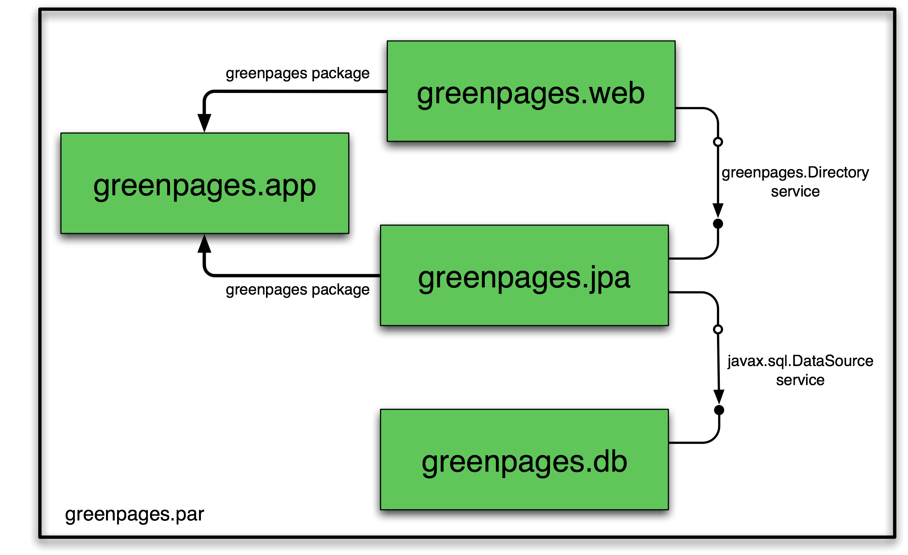
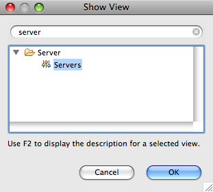
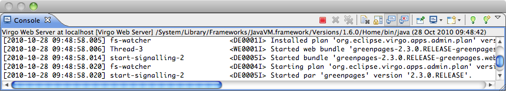

GreenPages: a demonstration
2.1.0.RELEASE
Abstract
Spring application programmers are introduced to Virgo Web Server by installing the Web Server and examining a small application called GreenPages. Despite its simplicity, GreenPages is designed to demonstrate many different Web Server features and to act as a template from which other modular applications can be built.
This version of the guide is based on the following software versions:
| Web Server | 2.1.0.RELEASE | |
| GreenPages | 2.3.0.RELEASE | |
| SpringSource Tool Suite | 2.5.0.RELEASE | |
| Apache Maven | 2.2.0 |
Copyright © 2009, 2010 VMware Inc.
All rights reserved. This document is made available under the terms of the Eclipse Public License v1.0 which is available at http://www.eclipse.org/legal/epl-v10.html.
Java, Sun, and Sun Microsystems are trademarks or registered trademarks of Sun Microsystems, Inc. in the United States and other countries.
OSGi is a trademark or a registered trademark of the OSGi Alliance in the United States, other countries, or both.
Eclipse is a trademark of Eclipse Foundation, Inc.
UNIX is a registered trademark of The Open Group.
Windows is a registered trademark of Microsoft Corporation in the United States and other countries.
Mac and Mac OS are trademarks of Apple Inc., registered in the U.S. and other countries.
Table of Contents
This Guide introduces some basic concepts, explains how to install Virgo Web Server and the associated Eclipse™ tools, and examines a sample web application in detail, including how the application is built and tested.
It is intended for Spring application programmers and assumes little or no understanding of OSGi™ or Virgo Web Server.
Questions about Web Server and SpringSource Tool Suite (or this Guide) may be posted to the Web Server Community Forums (http://www.eclipse.org/forums).
Virgo Web Server is a Java application server composed of a
collection of modules which supports applications which are also composed of a
collection of modules.
These may be traditional Java web applications packaged as Web ARchive (.war)
files as well as other modular applications.
Modules may be shared between applications and multiple versions of modules
can co-exist.
This chapter introduces concepts necessary for developing Web Server applications. These concepts will become clearer as the GreenPages application is explored in later chapters.
Modules in Virgo are represented using a standard Java module system known as OSGi. Modules consist of programs and resources organised by Java package together with metadata which declares imported and exported packages. A module exports a package to make the corresponding programs and resources available for use by other modules. A module imports a package to use the corresponding programs and resources of another module.
Representing a program as a collection of modules makes it easier for the programmer to manage it and modify it and for teams of programmers to divide responsibilities between themselves. A module is similar to a Java class in this respect. Design principles similar to those for organising data and programs into classes can be applied to organising applications into modules.
An industry consortium known as the OSGi Alliance (see the appendix Projects) develops OSGi specifications, reference implementations, and compliance tests. Virgo Web Server is built on the Equinox OSGi framework which is also the reference implementation for the OSGi framework specification.
Modules in OSGi are known as bundles.
Each bundle is stored in a file which conforms to the JAR file format and
can contain Java classes, a manifest (in META-INF/MANIFEST.MF),
and further resource files.
The OSGi framework enables bundles to be installed and run.
OSGi identifies bundles “by name” or “by identifier” (id).
The symbolic name and
version of a bundle is an attribute of the bundle itself and uniquely identifies that bundle (by name) in an OSGi framework.
A bundle usually declares its symbolic name and version
in its manifest (a file called MANIFEST.MF) like this:
Bundle-SymbolicName: org.foo.bundle Bundle-Version: 1.2.3.BUILD-2009-06-04
Additionally, the OSGi framework
assigns a distinct number, known as a bundle id, to each bundle
as it is installed. Bundles may be referred to “by identifier” using this number.
The OSGi framework itself resides in a
bundle with bundle id 0.
The
dependencies between bundles are expressed statically in terms of packages and
dynamically in terms of services. A package is familiar to Java programmers.
For example, a Java program may depend on a class org.foo.X,
from package org.foo, and a bundle
containing that program
would either need to contain org.foo.X or depend on the
package org.foo.
Package dependencies are specified in the bundle manifest, for example:
Import-Package: org.foo
A bundle which provides a package for use by other bundles must export the package in its manifest. For example:
Export-Package: org.foo
The OSGi framework ensures that a given bundle’s package dependencies can be satisfied before the bundle runs. This process is known as resolution.
After a bundle is resolved, its classes and resources are available for loading. In OSGi, bundles and their packages do not appear on the application classpath. Instead, each bundle has a class loader which loads its own classes and loads classes belonging to each of its imported packages by deferring to the bundle class loader that exports the package.
The OSGi framework manages the life cycle of each bundle. A bundle is first of all installed and will be in the INSTALLED state. If a request is made to start the bundle, the OSGi framework resolves the bundle and, if resolution was successful, will subsequently move the bundle to the ACTIVE state. If a request is made to stop the bundle, the OSGi framework will move the bundle back to the RESOLVED state. A request may then be made to uninstall the bundle.
While the bundle is INSTALLED, ACTIVE or RESOLVED, it may be updated to pick up some changes. These changes are not detected by bundles which were depending on the bundle before it was updated. A “refresh packages” operation may be performed to ripple the changes out to those bundles. (See Services concepts.)
The life cycle of a bundle can be summarised by a state transition diagram. This diagram shows some more of the intermediate states of a bundle not described in the overview above:
Bundles may publish Java objects, known as services, to a registry managed by the OSGi framework. Other bundles running in the same OSGi framework can then find and use those services. Services are typically instances of some shared Java interface. A bundle which provides a service need not then export the package containing the implementation class of the service.
For example, a bundle could export a package containing the interface
org.bar.SomeInterface, thus:
Export-Package: org.bar
…implement the interface with a class SomeImpl:
package org.bar.impl;
class SomeImpl implements SomeInterface {
…
}
…create an instance of SomeImpl and
then publish this instance (as an instance of the interface SomeInterface).
An OSGi framework publishes a number of standard services. For example, the Package Admin service provides the “refresh packages” life cycle operation mentioned above.
OSGi provides an API which can be used to publish and find services, but it is much simpler to use Spring DM to accomplish this. (See Spring DM concepts.)
OSGi allows different versions of bundles, packages, and several other entities, to co-exist in the same framework and provides some mechanisms for managing these versions.
An OSGi version number consists of up to three numeric components,
or exactly three
numeric components followed by a string component. These components are
separated by a period (“.”) and
are called the major, minor, micro,
and qualifier components, respectively.
For example, the version 2.4.1.ga has major component 2, minor component
4, micro component 1,
and a qualifier component ga. (There are restrictions on the characters that can appear in
a qualifier. For example: letters, digits, underscores and hyphens are allowed; periods and commas are not.)
Trailing components may be omitted along with their period (.). So, for example, the version
numbers 2, 2.0, and 2.0.0
all denote the same version. This example demonstrates that 0 is assumed if a numeric component is omitted,
and the empty string is assumed for an omitted qualifier.
Dependencies on bundles and packages have an associated version range
which is specified using an interval notation: a square bracket
“[” or “]” denotes
an inclusive end of the range and a round bracket
“(” or “)” denotes
an exclusive end of the range. Where one end of the range is to be included and the other excluded, it is permitted to
pair a round bracket with a square bracket.
The examples below make this clear.
If a single version number is used where a version range is required this does not indicate a single version, but the range starting from that version and including all higher versions.
There are three common cases:
A “strict” version range, such as
[1.2,1.2], which denotes that version and only that version.A “half-open” range, such as
[1.2,2), which has an inclusive lower limit and an exclusive upper limit, denoting version1.2.0and any version after this, up to, but not including, version2.0.0.An “unbounded” version range, such as
1.2, which denotes version1.2and all later versions.
A versioning policy is a way of using version numbers to indicate compatible and incompatible changes. OSGi does not mandate a particular versioning policy. Instead, a specific versioning policy may be implemented using version ranges.
Strict and half-open version ranges are most useful in representing versioning policies. Unbounded version ranges can lead to problems as they (unrealistically) assume that compatibility will be preserved indefinitely.
For example, a conservative versioning policy might assume that any change, other than
in the qualifier component of a version, implies an incompatible
change to the object.
Such a policy would employ version ranges such as [1.2.1.beta,1.2.2)
which accept any version from 1.2.1.beta (inclusive) up to but not including
1.2.2 (exclusive).
Alternatively, a relaxed versioning policy might assume that only changes in the major component of
a version denote an incompatible change.
Such a policy would employ version ranges such as [1.2,2) to capture this.
Each bundle has a version.
The bundle’s version may be specified in the manifest using a
Bundle-Version header:
Bundle-Version: 1.4.3.BUILD-20090302
If not specified the bundle version is assumed to be 0.
Each exported package has a version. The exported package’s version may be specified on the Export-Package manifest header. For example
Export-Package: org.foo;version="2.9",org.bar;version="1"
exports two packages: org.foo, at version 2.9.0 and
org.bar, at version 1.0.0.
If the version attribute is omitted the version is assumed to be 0.
Each package import has a version range.
The package import version range may be specified on the Import-Package manifest header.
If interval notation is used, the version range must be enclosed in double quotes, for example:
Import-Package: org.foo;version="[2,3)",org.bar;version="[1,1]"
seeks to import a package org.foo in the range [2.0.0,3.0.0) and a package
org.bar with the (exact) version 1.0.0.
If a version range is not specified on an import, the range 0 is assumed, meaning that
any version of this package would satisfy the import.
Bundle manifests have a version which is 1 by default,
indicating OSGi Release 3 semantics.
Web Server is based on OSGi Release 4 and therefore expects bundle manifests to be
at version 2, indicating OSGi Release 4 semantics. (See the appendix Projects.)
The bundle manifest’s version should be specified on the Bundle-ManifestVersion manifest header, exactly as follows:
Bundle-ManifestVersion: 2
Manifests themselves also have a version which must be specified as 1.0.
This is not an OSGi definition but part of the JAR file specification
(http://java.sun.com/javase/6/docs/technotes/guides/jar/jar.html).
Manifest-Version: 1.0
Spring DM is a project which enables services to be published and consumed using descriptions written in XML. Web Server has Spring DM built-in.
The XML descriptions reside in files with extension .xml in the
bundle’s META-INF/spring sub-directory.
To publish a service, an <osgi:service> tag is used, specifying the
implementation class of the service and the interface class to be used.
Spring DM constructs an instance of the implementation class and
publishes that instance in the OSGi service registry under the interface when the bundle is started.
To consume a service, an <osgi:reference> tag is used and the
service may be passed into other Spring beans using Spring’s dependency
injection facilities.
Spring DM automatically creates proxies for OSGi services so that the actual service object may come and go at runtime. If a service disappears, any proxies to the service will wait for the service to re-appear. This effect is known as damping.
When a bundle is started, Spring DM builds the application contexts specified by the XML descriptions, creates proxies for the specified services, and publishes the specified services to the OSGi service registry.
When a bundle is stopped, Spring DM retracts any services it published on behalf of the bundle and closes the bundle’s application contexts. Web Server turns off damping of a service proxy while the proxy’s application context is being closed.
(Spring DM has been contributed to Eclipse as the Gemini Blueprint project.)
Web Server provides a way of grouping together a collection
of OSGi bundles which comprise a single application.
These bundles are placed in a JAR file with extension “.par”. This is called a PAR file.
All the bundles in a PAR file are resolved together and so mutual dependencies are permitted.
At runtime a PAR file provides a scope in the sense that bundles inside the PAR file may depend on packages and services outside the PAR file, but bundles outside the PAR file may not depend on packages and services provided by the PAR file.
Virgo also provides the plan artifact as another way of grouping bundles and other artifacts into an application. A plan is a file (in XML format) listing a collection of artifacts. This Guide makes no further reference to plans. See Section A.2, “Documentation” for a link to more Virgo documentation.
PAR files (or individual bundles) are deployed into Web Server by dropping them into a “pickup” directory or using the Administration Console web application provided with Web Server. During deployment, the bundles in the PAR file are installed into OSGi, resolved together, and then started together.
Before developing an application with Web Server, it is essential to install Web Server, an Integrated Development Environment (IDE), and a build system integrated with Eclipse. The IDE used here is the Eclipse-based SpringSource Tool Suite (STS), and the build system used here is Apache Maven.
STS is supplied as a fully configured Eclipse IDE, with Virgo Web Server and Maven plugins built-in.
Before proceeding, ensure that a Java™ Standard Edition Development Kit (JDK)
for Java 6 or later is installed and that the JAVA_HOME environment variable
is set to the root directory of the JDK.
(A Java Runtime Environment (JRE) alone is not sufficient,
a development kit is necessary to use the facilities in STS.)
To verify this, issue the command "%JAVA_HOME%"\bin\java -version from
a command prompt on Windows (or $JAVA_HOME/bin/java -version from a terminal window on UNIX)
and ensure that the command completes successfully and reports
a Java version 1.6.x (denoting Java 6) or greater.
Also issue the command "%JAVA_HOME%"\bin\jar to ensure that there is a means of
extracting files from zip archives.
If the jar command is unavailable, download and install a suitable zip program
such as 7zip, gzip, or WinZip.
This is most relevant for Windows operating systems where the inbuilt zip extraction utility may
not handle long pathnames correctly.
Although the steps are similar, the details of installing the Virgo Web Server depend on the operating system.
Obtain Web Server from the download site (http://www.eclipse.org/virgo/download). This guide is consistent with version 2.1.0.RELEASE of Web Server.
Unzip the download of Web Server to the root directory of
a drive (this will avoid possible problems with long pathnames).
Set an environment variable %VWS_HOME% to refer to the unzipped folder…
prompt> cd C:\
prompt> "%JAVA_HOME%"\bin\jar xf \path\to\virgo-web-server-2.1.0.RELEASE.zip
prompt> set VWS_HOME=C:\virgo-web-server-2.1.0.RELEASE
To verify the installation, issue the command:
"%VWS_HOME%"\bin\startup.bat and ensure a message numbered UR0001I
is displayed.
Many other messages about starting and installing other required artifacts are produced,
but the UR0001I message indicates that the user region is ready for use.
(Timestamps have been removed
and thread names and other details may vary with different installations and versions.)
system-artifacts <TC0000I> Starting Tomcat. system-artifacts <TC0010I> Creating HTTP/1.1 connector with scheme http on port 8080. system-artifacts <TC0010I> Creating HTTP/1.1 connector with scheme https on port 8443. system-artifacts <TC0010I> Creating AJP/1.3 connector with scheme http on port 8009. system-artifacts <TC0001I> Started Tomcat. system-artifacts <DE0004I> Starting bundle 'org.eclipse.virgo.web.core' version '2.1.0.RELEASE'. system-artifacts <DE0004I> Starting bundle 'org.eclipse.virgo.web.dm' version '2.1.0.RELEASE'. start-signalling-1 <DE0005I> Started bundle 'org.eclipse.virgo.web.dm' version '2.1.0.RELEASE'. system-artifacts <DE0005I> Started bundle 'org.eclipse.virgo.web.tomcat' version '2.1.0.RELEASE'. start-signalling-1 <DE0005I> Started bundle 'org.eclipse.gemini.web.tomcat' version '1.1.0.RELEASE'. start-signalling-2 <DE0005I> Started bundle 'org.eclipse.virgo.web.core' version '2.1.0.RELEASE'. start-signalling-2 <DE0005I> Started plan 'org.eclipse.virgo.web' version '2.1.0'. Thread-2 <UR0001I> User region ready.
Shut down the server by pressing Ctrl-C.
Unzip the download of Web Server to a suitable location on the file system, such
as the home directory. (If the download was automatically unzipped by the operating
system, simply move the unzipped directory to the chosen location.)
Set an environment variable $VWS_HOME to refer to the unzipped folder…
prompt$ mkdir /path/to/home/springsource prompt$ cd /path/to/home/springsource prompt$ unzip /path/to/virgo-web-server-2.1.0.RELEASE.zip prompt$ export VWS_HOME=/path/to/home/springsource/virgo-web-server-2.1.0.RELEASE
To verify the installation, use a terminal window to issue the command:
$VWS_HOME/bin/startup.sh and ensure a message numbered UR0001I is displayed.
Many other messages about starting and installing other required artifacts are produced,
but the UR0001I message indicates that the user region is ready for use.
(Timestamps have been removed
and thread names and other details may vary with different installations and versions.)
system-artifacts <TC0000I> Starting Tomcat. system-artifacts <TC0010I> Creating HTTP/1.1 connector with scheme http on port 8080. system-artifacts <TC0010I> Creating HTTP/1.1 connector with scheme https on port 8443. system-artifacts <TC0010I> Creating AJP/1.3 connector with scheme http on port 8009. system-artifacts <TC0001I> Started Tomcat. system-artifacts <DE0004I> Starting bundle 'org.eclipse.virgo.web.core' version '2.1.0.RELEASE'. system-artifacts <DE0004I> Starting bundle 'org.eclipse.virgo.web.dm' version '2.1.0.RELEASE'. start-signalling-1 <DE0005I> Started bundle 'org.eclipse.virgo.web.dm' version '2.1.0.RELEASE'. system-artifacts <DE0005I> Started bundle 'org.eclipse.virgo.web.tomcat' version '2.1.0.RELEASE'. start-signalling-1 <DE0005I> Started bundle 'org.eclipse.gemini.web.tomcat' version '1.1.0.RELEASE'. start-signalling-2 <DE0005I> Started bundle 'org.eclipse.virgo.web.core' version '2.1.0.RELEASE'. start-signalling-2 <DE0005I> Started plan 'org.eclipse.virgo.web' version '2.1.0'. Thread-2 <UR0001I> User region ready.
Shut down the server by pressing Ctrl-C.
The SpringSource Tool Suite (STS) is a development environment based on Eclipse that is already configured with the plugins needed to work with Web Server and OSGi. Although the steps are similar, the details of installing STS depend on the operating system.
Go to the STS download site (http://www.springsource.com/products/springsource-tool-suite-download) and download the variant appropriate to the operating system being used. This guide is consistent with STS version 2.5.0.RELEASE. Previous versions may not work properly with the latest revision of GreenPages, currently 2.3.0.RELEASE.
It is possible to use vanilla Eclipse, and add the SpringSource Tools to it. Please refer to the installation instructions in the Virgo Programmer Guide.
Unzip the download of STS to the root directory of a drive (this will avoid possible problems with long pathnames).
prompt> cd C:\
prompt> "%JAVA_HOME%"\bin\jar xf \full…path…to\springsource-tool-suite-2.5.0.RELEASE-e3.6.1-win32.zip
To verify the installation, run the eclipse.exe (or sts.exe) executable in the unzipped directory
and check that STS displays a welcome panel.
The first time there may be a short delay due to the initial set-up of indexes.
Unpack the download of STS to a suitable location on the file system, such
as /opt or, if root access is not available, the home directory.
(If the download was automatically unpacked by the operating
system, simply move the unpacked directory to the chosen location.)
To verify the installation, run the STS executable (STS.app on Mac OS X)
in the unpacked directory and check that STS displays a welcome panel.
The first time there may be a short delay due to the initial set-up of indexes.
Apache Maven, or Maven for short, is a software project management and comprehension tool
which uses a central Project Object Model (POM) to manage a project’s build, reporting
and documentation generation. POM files (pom.xml) are included in the projects for
GreenPages.
To install Maven, visit the Maven website (http://maven.apache.org)
and follow the download instructions from there.
This document has been written and tested with Maven version 2.2.0. The rest of the document
assumes that Maven
commands (mvn …) are available from the command line.
GreenPages is a simple application that allows users to search an online email address directory. Each listing in the directory details the relevant email addresses and the name of the owner. GreenPages has only three screens: the search screen, the results screen and the listing detail screen.
In the search screen, users can enter search criteria to be matched against the listings in the directory. The result screen displays any listings that match the criteria entered by the user. The listing detail screen shows all the data known about a given listing.
Despite its simplicity, GreenPages is designed to demonstrate many different Web Server features and to act as a template from which other modular applications can be built. In particular, GreenPages demonstrates:
module dependencies with
Import-Package,load-time weaving with JPA and AspectJ,
bundle classpath scanning, and
service export, lookup and injection.
In addition to demonstrating common Web Server features, GreenPages demonstrates integration with:
Spring Framework 3.0;
FreeMarker 2.3;
EclipseLink 1.0.0;
H2 1.0.71; and
Commons DBCP 1.2.2.
The GreenPages application is packaged as a PAR file containing four modules.
|  |
The greenpages.db module provides access to an external database and publishes a
javax.sql.DataSource service.
The greenpages.app module exports a greenpages package containing
Directory and Listing interfaces.
The greenpages.jpa module imports the greenpages package and
uses the javax.sql.DataSource service to
access the external database and publishes its contents as a greenpages.Directory service.
The greenpages.web module imports the greenpages package and uses the
greenpages.Directory service to respond to web requests.
This document provides instructions for building the complete GreenPages application and running it in Web Server as well as running tests and executing it from the SpringSource Tool Suite. In addition, the application is examined in development stages from SpringSource Tool Suite, stepping through the development process and comparing this to the solution.
To get the completed GreenPages application, including tests and explanatory skeleton parts:
download the latest ZIP file from
http://eclipse.org/virgo/download/
extract all the files from the ZIP file to a convenient directory (preserving the directory structure).
To extract the files on Windows:
prompt> mkdir c:\springsource\samples prompt> cd c:\springsource\samples prompt> jar xf c:\path\to\greenpages-2.3.0.RELEASE.zip prompt> set GREENPAGES_HOME=c:\springsource\samples\greenpages-2.3.0.RELEASE
To extract the files on Unix systems:
prompt$ mkdir -p /opt/springsource/samples prompt$ cd /opt/springsource/samples prompt$ unzip /path/to/greenpages-2.3.0.RELEASE.zip prompt$ export GREENPAGES_HOME=/opt/springsource/samples/greenpages-2.3.0.RELEASE
The environment variable GREENPAGES_HOME set here is not used by the projects, but is used as a shorthand
in the instructions that follow.
The GreenPages zip file contains two main directories called solution and start.
The solution directory contains the completed application which can be built and tested (as described in the next section).
The start directory contains an initial skeleton of the GreenPages application which can be used to generate the full application.
The examination steps refer to this skeleton by way of illustration.
To follow the examination steps read Chapter 4, The Web Module after installing the full application in the following section.
GreenPages uses Apache Maven as its primary build system. Each module of the application can be built separately and the entire application can built and assembled into a PAR file from a single location. To build the application and assemble it into a PAR file:
Make
$GREENPAGES_HOME/solutionthe current directory.Run the command
mvn package. The first time this is run several files will be downloaded from Maven repositories and SpringSource repositories. Subsequent runs will not need to do this.Verify that the
greenpages-2.3.0.RELEASE.parfile exists in$GREENPAGES_HOME/solution/greenpages/target.
Unlike traditional Java EE applications, GreenPages does not package all of its dependencies inside its deployment unit. Instead, it relies on the mechanisms of OSGi to locate its dependencies at runtime. When running an OSGi application on Web Server, these dependencies can be loaded into memory as needed, but first they must be made available to Web Server.
The Maven build included with GreenPages uses the dependency:copy-dependencies plugin to gather
all the artifacts that GreenPages depends on that are not supplied by the Web Server runtime. These dependencies
can then be installed into the Web Server repository. Dependencies are gathered automatically during the
package phase. These dependencies can be found in
$GREENPAGES_HOME/solution/greenpages/target/par-provided. To install dependencies
simply copy all the *.jar files from this directory into $VWS_HOME/repository/usr.
Installing dependencies on Windows:
prompt> cd %GREENPAGES_HOME%\solution\greenpages prompt> copy target\par-provided\* %VWS_HOME%\repository\usr
Installing Dependencies on UNIX:
prompt$ cd $GREENPAGES_HOME/solution/greenpages prompt$ cp target/par-provided/* $VWS_HOME/repository/usr
Notice that Web Server will not necessarily see these dependencies unless its repository indexes are rebuilt.
Different repositories behave differently in this respect; some are passive (their indexes are built only once upon startup)
and some are active (they can detect new files or files being removed dynamically).
The usr repository is active so there is no
need to restart Web Server when copying these files.
The next time Web Server is started the -clean option will cause Web Server to re-scan the repository directories in any case.
It is always safe to start Web Server with the -clean option.
GreenPages uses the H2 database to store all its data. Before starting the application, start the database server and populate the database with data.
Change to the
$GREENPAGES_HOME/dbcurrent directory. On Unix:prompt$ cd $GREENPAGES_HOME/db
On Windows:
prompt> cd %GREENPAGES_HOME%\db
Run the database startup script appropriate to the operating system. For Unix, this is
run.sh, run in the background:prompt$ sh run.sh &
Press Return to continue.
On Windows, run the
run.batcommand:prompt> run
For both platforms, the command might invoke a browser window offering a connection to the database; close this window.
Run the data population script appropriate to the operating system. For Unix, this is
data.sh:prompt$ sh data.sh
On Windows, run the
data.batcommand:prompt> data
Run these commands once to start a database server for H2; the server will continue to run in the background.
To install the GreenPages PAR into Web Server and start it:
Copy the GreenPages PAR to the
$VWS_HOME/pickupdirectory. On Unix:prompt$ cd $VWS_HOME prompt$ cp $GREENPAGES_HOME/solution/greenpages/target/greenpages-solution-2.3.0.RELEASE.par pickup/
On Windows:
prompt> cd %VWS_HOME% prompt> copy %GREENPAGES_HOME%\solution\greenpages\target\greenpages-solution-2.3.0.RELEASE.par pickup\
Start Web Server with the
-cleanoption. On Unix:prompt$ $VWS_HOME/bin/startup.sh -clean
On Windows:
prompt> "%VWS_HOME%"\bin\startup.bat -clean
Verify that GreenPages starts correctly by checking in the Web Server output for the log message:
<DE0005I> Started par 'greenpages' version '2.3.0.RELEASE'.
Once installed and started, the GreenPages application can be accessed with a web browser using the address http://localhost:8080/greenpages.
From the home page, a search query can be entered into the search box:

After entering a query into the search box, the results page shows all the matches from the directory:

Clicking on view next to an entry in the search listing displays the full details for that listing entry:
Using Eclipse and the Web Server tools, it is possible to run applications directly from the IDE. As changes are made to the application in the IDE, they can be automatically applied to the running application allowing for rapid feedback of changes in function.
Before starting the GreenPages application from Eclipse, import the projects:
Open the Import Wizard using → .
From the Import Wizard select → and click Next:

Click and select
$GREENPAGES_HOME/solutionas the root directory.In the Import Projects window, select all the projects and click Finish:

Validate that the imported projects appear in Package Explorer:

There may be compilation errors at this stage.
Projects for Web Server are associated with a Virgo Web Server runtime environment in Eclipse. This is to allow launching and testing from within Eclipse, and also to allow classpath construction in Eclipse to mirror the dynamic classpath in the Web Server runtime.
Compilation errors in the previous step will be resolved here.
To configure a Web Server runtime environment:
Open → → .
In the Show View dialog choose → to make the servers view visible:
Right-click in the Servers (which may not be empty) view and select → .
In the New Server dialog, choose → and click Next.
Click and select the
$VWS_HOMEdirectory. Ensure that a JRE is selected supporting Java 1.6 or above. Click to complete creation of the server:
Select all projects (except Servers) in Package Explorer. Right-click on the projects and choose and then .
It is possible that there remain spurious build errors from Eclipse (see the Problems view), in which case a project clean build may clear the problems. Select → from the main menu, and choose to Clean all projects. It may be necessary to repeat this on a few projects. (This process is sometimes known as the “Eclipse dance”.)
Despite the dance steps outlined, there will remain some Warnings like this:

It is safe to ignore these.
When STS starts the Web Server it uses a ‘warm start’ by default.
It is useful to set the -clean option so that every server start is a clean one.
This is done by an option on the Web Server Overview window, which is obtained by opening the Web Server entry in the Servers window in STS.
(Double-click, or right-click and choose Open.)
The check box is labelled ‘Start server with -clean option’.
Close the window before proceeding.
Now that GreenPages is successfully imported into Eclipse, run the project directly from within the IDE.
If the GreenPages PAR file was copied to the pickup directory, be sure it is now removed so that it does not conflict with the deployment of the Eclipse project. On Unix:
prompt$ cd $VWS_HOME/pickup prompt$ rm greenpages-solution-2.3.0.RELEASE.par
On Windows:
prompt> cd %VWS_HOME%\pickup prompt> del greenpages-solution-2.3.0.RELEASE.par
Also, to prevent conflicts with the server configured in Eclipse, stop a currently-running Web Server by typing Control-C in the console window.
To run GreenPages from within Eclipse:
Right click on the Web Server instance in the Servers view and select the menu item.

Add greenpages-solution (which is the containing project or PAR) to the server and finish.
To start Web Server from within Eclipse right-click on the Web Server node in the Servers window and choose . The Servers view should now show the server and the added project:

Verify that GreenPages is started correctly by checking for
<DE0005I> Started par 'greenpages' version '2.3.0.RELEASE'.in the Console window.
(If errors are shown implying that GreenPages failed to be installed, this may be because some dependencies were not copied to Web Server, as described in section the section called “Installing dependencies into Web Server”. Check this.)
Once installed and started GreenPages is again available from a web browser at the address http://localhost:8080/greenpages.
In common with most Enterprise Java applications GreenPages uses a web-based interface for user interactions. The following steps show how the controller for the application is constructed, using a service from the OSGi Service Registry.
It is assumed that the instructions in Chapter 2, Installation have been followed already and that the GreenPages zip file has been downloaded and unzipped as described in Chapter 3, Installing and exploring GreenPages.
Before beginning, configure the development environment to work with the application. In the case of GreenPages this means Maven and Eclipse.
The following sections are most easily followed in the Java (or Spring) perspective (not, for example, the Java EE perspective). If not already in an appropriate perspective, switch in SpringSource Tool Suite using the menu:
In this step create a reference to the Web Server instance that the GreenPages application integrates with (the instance may already be created if the GreenPages solution has been run from STS).
In STS open → → . Select Add… to create a new Web Server runtime environment. In the dialog that opens, select the Virgo Web Server (runtime) v2.1 and check the box to Create a new local server. When complete, press Next.

In the next dialog, set the Virgo Web Server installation directory field to the
value of $VWS_HOME and
check that the JRE: option is set to Java 1.6 or later.
This may not be the workbench default.
When complete, press Finish.
After returning to the Preferences window, press OK to return to Eclipse. The Servers view has opened and now shows an instance of Virgo Web Server in it.

There is also a Servers project, in which the server is listed.
The Spring’s MVC style of web application development is used in which the central type
is the Controller class.
The GreenPages application is divided into OSGi bundles that are represented as Eclipse
projects. In this step import the greenpages.web project.
Starting with no projects, import the web project by right-clicking in the Package Explorer
view and selecting the Import… menu item.
In the dialog that opens, choose → and select Next.
In the following dialog set the root directory to the value of
$GREENPAGES_HOME/start/greenpages.web and press Finish.
(Initially this project may have compiler errors; this is to be expected particularly if the Maven repository hasn’t yet been created.) When this project is imported go to the next step.
In the src/main/java source folder of the greenpages.web project
the package greenpages.web
should contain the controller class named
GreenPagesController.
Create this by right-clicking on the greenpages.web package in the
src/main/java source folder and selecting
→ .
(If Class is not offered on the New menu
the Java perspective may not be being used, in which case look for
the Class option under Other… in the Java section.)
Name the new class GreenPagesController and press Finish.

The code should be edited to look like this:
@Controller public class GreenPagesController { … @RequestMapping("/home.htm") public void home() { } …
The annotations Controller and RequestMapping
are from Spring Framework and are imported by adding the lines:
import org.springframework.stereotype.Controller; import org.springframework.web.bind.annotation.RequestMapping;
STS will offer (as a Quick Fix) to insert imports for these Spring Framework annotations the first time they are used. (Java 1.6 supports annotations, and the Spring Framework libraries are accessible by linking to the correct Web Server runtime environment or generating the correct dependencies for the Maven plug-in.)
Spring will detect the @Controller annotation and create a bean of controller type,
provided that it scans the classpath for these.
Spring’s component scanning is enabled by inserting a context tag
in one of the Spring bean definition files.
Open the WEB-INF/greenpages-servlet.xml file in the
src/main/webapp folder and ensure the following lines are present:
<!-- enable classpath scanning --> <context:component-scan base-package="greenpages.web" />
Experiment by adding and removing this line, saving the file after each change.
(Easily done by commenting it—use the
Toggle Comment
shortcut in STS.)
Look in the Spring Explorer view for a bean named greenPagesController
dynamically created by the component-scan tag.
During development time, it can be helpful to run an application inside of the deployment container. In the case
of GreenPages, this means deploying the greenpages.web bundle to the Virgo Web Server.
The Web Server can be used while working in Eclipse.
In this step the greenpages.web bundle is deployed and the Web Server instance is started.
Drag the greenpages.web project from the Package Explorer and drop it
on the Web Server instance in the Servers view.
Because greenpages.web is a web bundle the server will start automatically, and
a browser window may open.
Expand the Web Server instance and the bundle greenpages.web will be listed as a child.

If deployment is successful the console will contain the message:
<DE0005I> Started bundle 'greenpages.web' version '2.3.0'
Leave the server instance running and go to the next step.
The Web Server has special knowledge of web application bundles. In this step web bundle metadata is added to the bundle and a web browser is used to navigate to it.
Open a web browser and navigate to http://localhost:8080/greenpages. If the link is not currently served by any bundle in the Web Server there may be an error displayed:

or else there is a blank page displayed. No pages are served.
To fix this issue the greenpages.web bundle must be declared to be a web bundle and a
context path defined.
Open the template.mf file (at the top level under the greenpages.web project)
and add (and save) the following entry (using the template.mf pane of the editor):
Web-ContextPath: greenpages
Be careful not to insert any blank lines or trailing spaces in this file.
Once added, right-click on the greenpages.web project and select
→ .
This will use a tool called Bundlor (included in STS) to update the OSGi metadata in the
MANIFEST.MF file. Once Bundlor has finished running, open the
META-INF/MANIFEST.MF file in the src/main/webapp folder.
It should look something like the following:
Manifest-Version: 1.0 Bundle-Name: GreenPages Web Import-Library: org.springframework.spring;version="[3.0, 3.1)" Import-Bundle: com.springsource.org.apache.taglibs.standard;version="[ 1.1.2,1.3)" Web-ContextPath: greenpages Import-Package: org.eclipse.virgo.web.dm;version="[2.0.0, 3.0.0) ",freemarker.cache;version="[2.3.15,2.3.15]",javax.servlet.jsp.jstl.c ore;version="[1.1.2,1.2.0)",javax.sql,org.apache.commons.dbcp,org.spr ingframework.core.io,org.springframework.stereotype,org.springframewo rk.web.bind.annotation,org.springframework.web.context,org.springfram ework.web.servlet Bundle-ManifestVersion: 2 Bundle-SymbolicName: greenpages.web Tool: Bundlor 1.0.0.RELEASE Bundle-Version: 2.3.0
although the order of the entries may be different.
The server (if it is still running) will track these changes and automatically refresh
(or restart) the greenpages.web bundle as required.
Observe the context path for the web bundle being announced
(it should now be '/greenpages'
whereas previously it would have been a default context path
derived from the bundle name: '/greenpages.web').
By default, Bundlor generates Import-Package entries with no version range specified.
In the absence of a version range, the OSGi default (which denotes any version) is used.
While this is very flexible it is generally a good idea to restrict an import by specifying a narrower range.
This can be achieved by providing Bundlor with some additional information in the manifest template,
as in the next step.
Add (and save) the following entry to the template.mf file:
Import-Template: org.springframework.*;version="[3.0.0, 3.1.0)"
(Again, be careful not to leave trailing spaces on lines or insert blank lines in this file, except that there must be one trailing space after the colon to indicate that the header continues on the next line.)
Re-run the MANIFEST.MF generation as described earlier.
In the MANIFEST.MF file the Import-Package entry
should now have version ranges on each of the springframework packages:
Import-Package: org.eclipse.virgo.web.dm;version="[2.0.0, 3.0.0) ",freemarker.cache;version="[2.3.15,2.3.15]",javax.servlet.jsp.jstl.c ore;version="[1.1.2,1.2.0)",javax.sql,org.apache.commons.dbcp,org.spr ingframework.core.io;version="[3.0.0, 3.1.0)",org.springframework.ste reotype;version="[3.0.0, 3.1.0)",org.springframework.web.bind.annotat ion;version="[3.0.0, 3.1.0)",org.springframework.web.context;version= "[3.0.0, 3.1.0)",org.springframework.web.servlet;version="[3.0.0, 3.1 .0)"
Behind the scenes the Web Server Tools have refreshed the deployed bundle as changes were made. Once again navigate to http://localhost:8080/greenpages. This page now displays an entry field.

Put any characters into the entry field and press Submit. This should display a “404” error page with the description:
description The requested resource () is not available.
This is because there is no search page (search.htm) to process this request yet.
The next section will address this.
At the end of the previous step, the Web Server instance was started
and the greenpages.web bundle deployed.
This bundle shows a static home page but a search value causes an error.
The error appears because the URL for that search is not serviced by the controller.
The application logic behind the search request is not in the greenpages.web project but
in another project called greenpages.app.
This section creates the greenpages.app project
and then combines the two projects into a PAR so as to deploy them together as a single unit.
While executing these instructions it is not necessary to remove bundles from the Web Server instance,
nor to stop the instance.
As changes are made the bundle will be refreshed (or redeployed) and the server instance
may report errors if the changes are incomplete.
These may safely be ignored.
Alternatively, the greenpages.web bundle can be removed from the Web Server instance,
or the server can be stopped while these changes are made.
All of the bundles in the GreenPages sample are Maven projects which refer to a ‘parent’ project. To allow STS to accommodate references to the parent, import this project first.
In the same way that the starting greenpages.web project was imported
(see Section 4.3, “The controller”)
import the $GREENPAGES_HOME/start/parent project.

In this step, the greenpages.app project is imported which contains the business
interfaces (and stub implementations of these interfaces).
In the same way that the starting greenpages.web project was imported
(see Section 4.3, “The controller”)
import the $GREENPAGES_HOME/start/greenpages.app project.
When Eclipse finishes importing the project, go to the next step.
The controller implementation will depend on the Directory and
Listing interfaces found in the greenpages.app project. In
this step, the implementation is added.
Open the GreenPagesController class.
Add the following field and methods to the class:
@Autowired private Directory directory; @RequestMapping("/search.htm") public List<Listing> search(@RequestParam("query") String query) { return this.directory.search(query); } @RequestMapping("/entry.htm") public Listing entry(@RequestParam("id") int id) { return this.directory.findListing(id); }
Add the (Quick Fix) suggested imports for the annotations Autowired
and RequestParam,
and choose the import for List< > from java.util.List.
Eclipse will not be able to suggest import statements for the
Listing and Directory types. This is because
the greenpages.web and greenpages.app projects are not linked together
and therefore cannot see each other’s types.
Proceed to the next step.
In Web Server, applications consisting of multiple bundles can be packaged as part of a PAR.
In this step a PAR project
containing the greenpages.web and greenpages.app bundles is
created and deployed to the server.
Right-click in the Package Explorer and select → . In the dialog that opens select → and press Next:

In the New PAR Project dialog, ensure the Use default location option is unchecked,
name the project greenpages, set the location to
$GREENPAGES_HOME/start/greenpages and press Next.

In the next dialog, some of the PAR properties are pre-populated.
Change the Application Name to Greenpages PAR and the Version to
2.3.0, then
ensure that the Target Runtime
is set to Virgo Web Server (Runtime) v2.1 and press Next.

In the next dialog, select the greenpages.app and greenpages.web
bundles so that they are contained in the PAR and press Finish.

The project greenpages.web still shows errors; these are soon to be fixed.
The package explorer view will now show the following:

PAR project creation is complete, go to the next section.
In an OSGi-based application, the business logic behind a controller is typically accessed through the OSGi Service Registry.
By default, Bundlor detects and exports all packages in a bundle.
In this step Bundlor is told what to
export from the greenpages.app bundle and which types from those packages to use in the
greenpages.web bundle.
Add and save the following entry to the template.mf file in the
greenpages.app project and then run the MANIFEST.MF generation on the project as
explained in the section called “Creating web module metadata”.
Excluded-Exports: greenpages.internal
(As before, be careful not to leave trailing spaces on the ends of lines, except for the one space after the colon, and not to add any blank lines to the file. The second line of this entry has a leading space—do not omit it.)
Check that the package is no longer exported in the greenpages.app MANIFEST.MF file
which should look something like this:
Manifest-Version: 1.0 Bundle-Name: GreenPages Service Bundle-ManifestVersion: 2 Bundle-SymbolicName: greenpages Tool: Bundlor 1.0.0.RELEASE Export-Package: greenpages;version="2.3.0" Bundle-Version: 2.3.0
Go to the next step.
Now that the greenpages.app bundle exports the package that the
Directory and Listing interfaces reside in,
the greenpages.web bundle must import it.
In this step the Maven
pom.xml file is updated to depend on the greenpages.app bundle and import the
package.
Open the pom.xml file in the greenpages.web project.
(Edit the source directly by using the pom.xml tab in the editor.)
In this file add
the following entry (between the <dependencies> tags):
<dependency> <groupId>com.springsource.dmserver</groupId> <artifactId>greenpages.app</artifactId> <version>${project.version}</version> </dependency>
Open the GreenPagesController class and import the Listing and
Directory types.
(Eclipse should now offer these as a Quick Fix.
It it does not, set greenpages.app as a project dependency of greenpages.web
in the Build Path of the web project.)
The class should now compile cleanly.
The following imports should now have been added to the GreenPagesController class:
import greenpages.Directory; import greenpages.Listing; import java.util.List; import org.springframework.beans.factory.annotation.Autowired; import org.springframework.stereotype.Controller; import org.springframework.web.bind.annotation.RequestMapping; import org.springframework.web.bind.annotation.RequestParam;
Add the following package clause to the Import-Template entry in the
template.mf file in the greenpages.web project. When added run the
MANIFEST.MF generation on the project as described in the section called “Creating web module metadata”.
greenpages.*;version="[2.3, 2.4)"
Be careful to include the “.*” in the package pattern.
Once Bundlor has finished, go to the next step.
Currently the Web Server instance has a single web module bundle deployed. In this step, the
greenpages.web bundle is undeployed and greenpages PAR is deployed.
Right-click on the Web Server in the Servers view, and select
Add and Remove…. In the dialog that opens, remove the
greenpages.web bundle and add the greenpages PAR to the server. When
the configuration is complete, press Finish.
Eclipse automatically undeploys the greenpages.web bundle and deploys the
greenpages PAR.
When this happens, the deployment may fail with an error.
If it does not, open the browser again at
http://localhost:8080/greenpages
and observe the failure which should have a root cause similar to:
org.springframework.beans.factory.NoSuchBeanDefinitionException:
No matching bean of type [greenpages.Directory] found for dependency:
expected at least 1 bean which qualifies as autowire candidate for this dependency.
Dependency annotations: {@org.springframework.beans.factory.annotation.Autowired(required=true)}
This error is caused by there being no instance of Directory to inject into the controller.
The next section will supply one.
There is no instance of Directory to be
injected into the controller.
In the GreenPages application, it is intended that this
implementation is used through an interface in
the OSGi Service Registry.
Using a service in the Service Registry enables
another bundle to
provide an implementation without revealing the implementation or the provider to all clients of the
service.
Web Server supports the use of the Spring DM namespace for
referencing elements in the OSGi Service Registry.
This step adds an OSGi Service Reference to an implementation of the
Directory interface.
In the webapp/WEB-INF/applicationContext.xml file in the greenpages.web
projects add a reference to a
greenpages.Directory instance in the OSGi service registry using
the <osgi:reference/> tag as follows:
<osgi:reference id="directory" interface="greenpages.Directory"/>
The tools will automatically redeploy the greenpages.web bundle when the change to the
bean definition has been saved.
The web bundle will not completely start.
This is because there is no provider of a greenpages.Directory in
the Service Registry. The next step will address this.
The error is re-issued as the Web Server instance waits for the service to be supplied. After about five minutes the server will “time-out” and the deploy will be abandoned. This same error (and time-out) will occur each time the PAR is redeployed as each change is made.
Stop the server instance by right-clicking on the server in the Servers view and selecting Stop. This will avoid unnecessary delays as changes are made.
At the end of the previous step, a dependency was created on an OSGi Service Registry exposed instance of
greenpages.Directory. The application would not start because no other bundle was
contributing an instance of this service to the Service Registry.
Stop the server instance before proceeding.
In this step Spring’s context scanning is added which will create an instance of the
DirectoryImpl class.
Open the greenpages.internal.DirectoryImpl class in the greenpages.app
project. Add the @Component annotation to the class:
@Component("directory") public class DirectoryImpl implements Directory { …
generating imports with Eclipse’s help if necessary.
Open the META-INF/spring/module-context.xml in the greenpages.app
project. Add component scanning to this file:
<context:component-scan base-package="greenpages.internal"/>
When complete, go to the next step.
In this step the DirectoryImpl instance is published to the OSGi Service
Registry.
Open the META-INF/spring/osgi-context.xml file. Add the
<osgi:service/> tag to publish the directory bean with an
interface of greenpages.Directory.
<osgi:service ref="directory" interface="greenpages.Directory"/>
Start (or restart) the Web Server instance from the Servers view. If the GreenPages PAR was not
removed before, it will be automatically deployed, otherwise deploy it as before. There should be no errors reported.
When GreenPages is deployed successfully, open a web browser and navigate to
http://localhost:8080/greenpages. On
the home page type wilkinson into the search field and press Submit.
Unlike the previous attempt, this should return a list (of size 1) of search results. From here, select
view to get the “detailed” listing.

This uses a stub implementation of the Directory interface which only knows about “Andy Wilkinson”.
The web interface is complete enough. Go to the next chapter to see the middle tier implementation.
GreenPages’ middle-tier provides implementations of the Directory and Listing
interfaces that can be used by the Web bundle.
The implementation will use EclipseLink JPA to access a database via a DataSource published in the
OSGi service registry.
The GreenPages application uses a very simple database that contains a single table.
The table, named LISTING, consists of four columns:
LISTING_NUMBER | FIRST_NAME | LAST_NAME | EMAIL_ADDRESS |
Scripts are provided with the sample source code (in $GREENPAGES_HOME/db) to start, create, and populate the database.
These will be used during the creation of the middle tier.
The middle tier will provide JPA-based implementations of the Directory and Listing interfaces with the four
attributes of a Listing (first name, last name, email address, and id) being mapped to the corresponding columns in the
LISTING.
JPA will be used to implement the queries that search the database and return Listings.

This section describes how to use
the bundle project creation wizard to create a new Bundle Project. The project’s Spring bean
definition files will also be created using the Spring bean configuration file creation wizard.
Create a new project by right-clicking in the Package Explorer view and selecting → . In the resulting dialog select → and press Next:

In the New Bundle Project dialog, name the project greenpages.db.
Choose the create the project from an existing source location and specify a location that will place the new
greenpages.db alongside the project skeletons that were imported into the workspace
earlier. If the start directory of the GreenPages sample is being used this will
be $GREENPAGES_HOME/start/greenpages.db (and, mutatis mutandis on Windows).
Click Next.
In this page of the wizard, many of the Bundle Properties are already populated. The
Bundle-SymbolicName is the name of the project. The Bundle-Name is
derived from the Bundle-SymbolicName. The Bundle-Version is
set, and there is no Bundle-Description.
Change the Bundle-Name to “GreenPages DataSource” to more accurately
describe the bundle’s purpose. An option to ‘Enable Bundle Classpath Container’ is already selected. It should
be de-selected, as a Maven Classpath container will be configured later.
Ensure that the Target Runtime
is set to Virgo Web Server (Runtime) v2.1.
Click Finish.
The greenpages.db project appears in the Package Explorer view.
Before a Maven Classpath Container can be added to the project, a pom.xml file must
be created.
Create a new file in the root of the greenpages.db project named
pom.xml and add the following contents to it:
<?xml version="1.0" encoding="UTF-8"?> <project xmlns="http://maven.apache.org/POM/4.0.0" xmlns:xsi="http://www.w3.org/2001/XMLSchema-instance" xsi:schemaLocation="http://maven.apache.org/POM/4.0.0 http://maven.apache.org/maven-v4_0_0.xsd"> <parent> <groupId>com.springsource.dmserver</groupId> <artifactId>greenpages.parent</artifactId> <version>2.3.0.RELEASE</version> <relativePath>../parent</relativePath> </parent> <modelVersion>4.0.0</modelVersion> <groupId>com.springsource.dmserver</groupId> <artifactId>greenpages.db</artifactId> <name>greenpages.db</name> <packaging>jar</packaging> <dependencies> </dependencies> </project>
Save the file.
A Maven Classpath Container can now be added to the project. Right-click the
greenpages.db project in the Package Explorer and select
→ .
Eclipse will perform some workspace building, and the greenpages.db project will now be marked as a Maven project.
(If the error Cannot find artifact for parent POM occurs check that the version is correct.
It may differ from the one given here.)
The last part of the setup of the project is to configure its source folders.
Return to the Properties dialog of
the greenpages.db project (from the Package Explorer view).
Select Java Build Path on the left-hand side and the Source tab
on the right-hand side.
Remove any pre-configured source folders by selecting them and
clicking Remove.
Now click Add folder and then
Create new folder….
Specify src/main/resources as the folder
name and click Finish, then OK and OK again.
The final change to be made is to drag the META-INF folder from src
to src/main/resources.
Once these changes have been made the project will appear
similar to the following in the Package Explorer view:

(It is useful to check that the Maven project just configured has the correct Java System library associated with it and that
the MANIFEST.MF file that we have just moved is correctly generated when necessary.
To ensure this, disable the dependency management (enabled in the previous section) and then re-enable it, saving the changes in between.
This step may also change the Java system libraries associated with the build (right-click on the greenpages.db project, under Properties, Java build path and Libraries).
If the Java system libraries look incorrect, simply remove them in the Libraries window and reset them.)
The DataSource bundle’s main rôle is to configure and create a DataSource object and to
publish this to the OSGi service registry. This will be done by creating
a handful of Spring beans.
By default, Spring DM looks for application context files in a bundle’s META-INF/spring
directory. Create a new folder named spring in the greenpages.db
project’s META-INF folder. Having created the new folder, right-click it in the
Package Explorer and select
→ .
This will open the wizard for creating Spring bean configuration files.
In the wizard enter a File name of module-context.xml and click
Next:
Add the p - http://www.springframework.org/schema/p namespace declaration to the pre-selected beans declaration and then click Finish.
Update the newly-created file (which is opened by Eclipse) to declare a bean that defines the DataSource
object that will be used to access the GreenPages database.
Do this by adding the following bean declaration:
<bean id="dataSource" class="org.apache.commons.dbcp.BasicDataSource" p:driverClassName="org.h2.Driver" p:url="jdbc:h2:~/greenpages-db/greenpages" p:username="greenpages" p:password="pass" init-method="createDataSource" destroy-method="close" />
The new bean has introduced a dependency on Commons DBCP, which will cause an error to be reported by Eclipse.
This dependency must be recorded in the project’s pom file. Open the pom file for greenpages.db and add
the following dependency between the <dependencies> tags:
<dependency> <groupId>org.apache.commons</groupId> <artifactId>com.springsource.org.apache.commons.dbcp</artifactId> </dependency>
Save the updated pom and then switch back to the editor for module-context.xml.
Save the updated file and
observe that the previously reported problem is now resolved as Commons DBCP is available on the classpath.
Now that the DataSource bean is available, it can be published into the OSGi service registry.
Right-click the spring folder and select
→ again.
This time specify
a name of osgi-context.xml, click Next, and add the osgi
namespace declaration
(ensure that the resultant schema location string contains the URL
http://www.springframework.org/schema/osgi/spring-osgi-1.2.xsd
as
http://www.springframework.org/schema/osgi/spring-osgi-2.0-m1.xsd
will result in an obscure deployment failure due to an invalid 'cacheTarget' property).
Click Finish and then add the following to the new file to publish the
DataSource as a service:
<!-- export the dataSource bean to the OSGi service registry under the DataSource interface --> <osgi:service ref="dataSource" interface="javax.sql.DataSource" />
Bundlor uses a manifest template to control the contents of the generated manifest.
Create a new file named
template.mf in the root of the greenpages.db project.
Open the existing
MANIFEST.MF and switch to the MANIFEST.MF tab to view its source. Copy
the contents. Switch to the editor for template.mf, switch to the
template.mf tab and paste the contents from MANIFEST.MF. These entries
will tell Bundlor what the resulting manifest’s bundle symbolic name, bundle version, etc. should be. Save the
updated template.
Still in the template.mf editor switch to the Overview tab
and click Update MANIFEST.MF which is under the “Bundle Actions” section.
At this point Bundlor will scan the project to determine its
dependencies. It will scan both module-context.xml and osgi-context.xml
looking for references to classes. For each class to which it finds a reference, an import for the class’s
package will be added to the resulting manifest.
In this case, Bundlor will generate imports for
both javax.sql and org.apache.commons.dbcp.
These imports may not be resolved.
The greenpages.db project needs to be associated with a Web Server instance which has the
Commons DBCP bundle in its repository to resolve them.
In any event the next step adds the greenpages.db
project to the GreenPages PAR and will result in it inheriting the PAR project’s targetted runtime
configuration.
Double-click the MANIFEST.MF file in the greenpages project in the
Package Explorer view.
Switch to the Dependencies tab and click Add….
Select greenpages.db and click OK.
Save the updated file.
A problem concerning the org.apache.commons.dbcp dependency should now be resolved
(along with any other resolution errors) and (if the server is running) the
GreenPages application will be redeployed due to the addition of the greenpages.db
module.
Start the server if it is not already running and observe that this deployment fails.
The deployment will fail because the org.h2.Driver class that is referenced in the
DataSource bean’s definition in module-context.xml is not available to
the bundle.
(Check for the exception org.springframework.beans.factory.BeanCreationException with
text something like:
Error creating bean with name 'dataSource' defined in URL [bundleentry://68.fwk504117357/META-INF/spring/ module-context.xml]: Invocation of init method failed; nested exception is org.apache.commons.dbcp.SQLNestedException: Cannot load JDBC driver class 'org.h2.Driver'
though the numbers might be different.)
There are a few cases where Bundlor will not identify a dependency on a class and, at the moment, this is one of them, although this is an area of Bundlor that is being improved all the time. Thankfully, it is easy to add the required import by making a simple update to the template.
Open the editor for the
template.mf file in the greenpages.db project and add the following
Import-Package header and save the updated manifest:
Import-Package: org.h2;version="[1.0.71,1.0.71]"
Saving the manifest will trigger a redeployment (or click on Update MANIFEST.MF as before) which will fail if the H2 database is not available. (Refer to the section the section called “Starting and configuring the database” in Chapter 3, Installing and exploring GreenPages to run and configure the database.)
If the database is running the GreenPages application should correctly deploy.
Although the application web front-end will run, the database contents is
not visible, of course, because we are still running with the stub version of the search method on the controller.
The implementation of the Directory service needs to be changed to exploit the database.
(One possible cause of failure here is the username and password on the dataSource
bean defined in module-context.xml. Check that these are exactly correct.)
In this section the JPA module in GreenPages is created, building upon an existing skeleton. JPA and its metadata are configured, and a JPA-based Directory service implementation is published which is then consumed by the application’s Web bundle.
The greenpages.jpa starter project provides the beginnings of a JPA-based implementation of
Directory named JpaDirectory. Import the greenpages.jpa project
from the $GREENPAGES_HOME/start directory.
Open the JpaDirectory.java source file
in the greenpages.jpa package of greenpages.jpa project (under src/main/java).
The source file
contains a Java Persistence Query Language (JPQL) search query that will be used to retrieve
listings from the database, and empty
implementations of the search and findListing methods.
First add an EntityManager to it.
Before the new field
can be added, EntityManager must be available on the classpath.
Open the pom for
greenpages.jpa and add the following dependency:
<dependency> <groupId>javax.persistence</groupId> <artifactId>com.springsource.javax.persistence</artifactId> </dependency>
Now return to JpaDirectory and add the following field to the class along with an
import for javax.persistence.EntityManager (which should be suggested by Eclipse):
private EntityManager em;
This EntityManager can now be used to implement the search and
findListing methods. Update the implementations of these two methods to match the
following implementations and then save the updated class:
public Listing findListing(int id) { return em.find(JpaListing.class, id); } @SuppressWarnings("unchecked") public List<Listing> search(String term) { return em.createQuery(SEARCH_QUERY).setParameter("term", "%" + term.toUpperCase() + "%").getResultList(); }
(Warnings from Eclipse should now be absent.)
The application context now needs to be updated to create JpaDirectory and to create
an EntityManager that can be injected into JpaDirectory.
Open
module-context.xml in the META-INF/spring folder of the
greenpages.jpa. Add the following beans that will create JpaDirectory
and an EntityManager, enable load-time weaving that is required by JPA, and enable
annotation-based configuration that will allow the EntityManager to be injected into
JpaDirectory:
<!-- Activates a load-time weaver for the context. Any bean within the context that implements LoadTimeWeaverAware (such as LocalContainerEntityManagerFactoryBean) will receive a reference to the autodetected load-time weaver. --> <context:load-time-weaver aspectj-weaving="on" /> <!-- JPA EntityManagerFactory --> <bean id="entityManagerFactory" class="org.springframework.orm.jpa.LocalContainerEntityManagerFactoryBean" p:dataSource-ref="dataSource"> <property name="jpaVendorAdapter"> <bean id="jpaVendorAdapter" class="org.springframework.orm.jpa.vendor.EclipseLinkJpaVendorAdapter" p:databasePlatform="org.eclipse.persistence.platform.database.HSQLPlatform" p:showSql="true" /> </property> </bean> <!-- Activates various annotations to be detected in bean classes: Spring's @Required and @Autowired, as well as JSR 250's @PostConstruct, @PreDestroy and @Resource (if available) and JPA's @PersistenceContext and @PersistenceUnit (if available). --> <context:annotation-config /> <bean id="directory" class="greenpages.jpa.JpaDirectory" />
The addition of the new beans to the context has introduced a new dependency upon Spring’s ORM support and upon
EclipseLink and its JPA implementation. Add the following dependencies to the pom file for
greenpages.jpa and save it:
<dependency> <groupId>org.springframework</groupId> <artifactId>org.springframework.spring-library</artifactId> <type>libd</type> </dependency> <dependency> <groupId>org.eclipse.persistence</groupId> <artifactId>com.springsource.org.eclipse.persistence</artifactId> </dependency> <dependency> <groupId>org.eclipse.persistence</groupId> <artifactId>com.springsource.org.eclipse.persistence.jpa</artifactId> </dependency>
Now switch back to module-context.xml for greenpages.jpa and observe
that the errors relating to Spring’s ORM types have now been resolved.
Save module-context.xml.
The application context now contains a factory that will create an EntityManager and is
configured for annotation-based configuration.
The last step in completing JpaDirectory
is to annotate the EntityManager field so that Spring will inject the
EntityManager created by the factory into the field.
Open JpaDirectory.java again and add an annotation @PersistenceContext to the
EntityManager field.
@PersistenceContext
private EntityManager em;
Eclipse will suggest an import for
javax.persistence.PersistenceContext; accept this and save the file.
JPA uses a file named META-INF/persistence.xml to describe persistence units.
persistence.xml refers to a second file, typically named
META-INF/orm.xml, to define entity mappings.
In the case of GreenPages the
persistence.xml file specifies a single persistence unit that points to the
greenpages.JpaListing class.
The specified mapping file
(META-INF/orm.xml) tells the JPA implementation how to map
JpaListing to the LISTING database table described above.
(For more information on JPA consult the Documentation section in the appendix.)
Create a new file named persistence.xml in the META-INF folder of
the greenpages.jpa project. Add the following contents to the new file and then save it:
<?xml version="1.0" encoding="UTF-8" ?> <persistence xmlns="http://java.sun.com/xml/ns/persistence" xmlns:xsi="http://www.w3.org/2001/XMLSchema-instance" xsi:schemaLocation="http://java.sun.com/xml/ns/persistence http://java.sun.com/xml/ns/persistence/persistence_1_0.xsd" version="1.0"> <persistence-unit name="GreenPages" transaction-type="RESOURCE_LOCAL"> <class>greenpages.jpa.JpaListing</class> </persistence-unit> </persistence>
Now create a new file named orm.xml also in the META-INF folder
alongside persistence.xml. Add the following contents to the new file and then save it:
<?xml version="1.0" encoding="UTF-8" ?> <entity-mappings xmlns="http://java.sun.com/xml/ns/persistence/orm" xmlns:xsi="http://www.w3.org/2001/XMLSchema-instance" xsi:schemaLocation="http://java.sun.com/xml/ns/persistence/orm http://java.sun.com/xml/ns/persistence/orm_1_0.xsd" version="1.0"> <package>greenpages.jpa</package> <entity class="greenpages.jpa.JpaListing" name="Listing"> <table name="LISTING" /> <attributes> <id name="listingNumber"> <column name="LISTING_NUMBER" /> <generated-value strategy="TABLE" /> </id> <basic name="firstName"> <column name="FIRST_NAME" /> </basic> <basic name="lastName"> <column name="LAST_NAME" /> </basic> <basic name="emailAddress"> <column name="EMAIL_ADDRESS" /> </basic> </attributes> </entity> </entity-mappings>
The entityManagerFactory bean that was added earlier depends upon a bean named
dataSource which it will use to connect the EntityManager
to the GreenPages database.
The greenpages.db module already publishes a
DataSource to the service registry.
greenpages.jpa must now be
updated to consume this.
Open osgi-context.xml in the META-INF/spring folder of the
greenpages.jpa project and add the following:
<!-- import the DataSource from OSGi --> <osgi:reference id="dataSource" interface="javax.sql.DataSource" />
This will result in a bean being created in the application context that is named dataSource.
The bean will be of type javax.sql.DataSource and will be backed by a service found in the
OSGi service registry that implements the javax.sql.DataSource interface.
(Some warnings concerning the dataSource bean will now disappear.)
To make the JPA-based Directory implementation available to GreenPages’
Web module it must be “published” to the OSGi service registry.
Open osgi-context.xml in the META-INF/spring folder of the
greenpages.jpa project, add the following and then save the updated file:
<!-- export the directory bean to OSGi under the Directory interface --> <osgi:service ref="directory" interface="greenpages.Directory" />
Open the template.mf file in the root of the greenpages.jpa
project and switch to the template.mf tab. Add the following entries to the template
and save it.
Import-Bundle: com.springsource.org.eclipse.persistence;version="[1.0.0,1.0.0]", com.springsource.org.eclipse.persistence.jpa;version="[1.0.0,1.0.0]" Import-Package: org.springframework.context.weaving;version="[3.0,3.1)", org.springframework.transaction.aspectj;version="[3.0,3.1)" Excluded-Exports: greenpages.jpa
The Excluded-Exports header tells Bundlor that the
greenpages.jpa should not be exported from the greenpages.jpa
bundle.
The Import-Package entries for
org.springframework.context.weaving and
org.springframework.transaction.aspectj are needed as Bundlor cannot, yet,
detect that these packages are required.
Lastly, the Import-Bundle entries for EclipseLink and its JPA implementation
are needed as Bundlor cannot, yet, detect that EclipseLink is the JPA implementation that is
being used by GreenPages.
Switch to the Overview tab and click Update MANIFEST.MF.
As with greenpages.db before, this update may result in some errors being
reported in the manifest as the project is not associated with a targetted runtime. Double-click the
MANIFEST.MF file in the greenpages project in the Package Explorer.
Switch to the Dependencies tab and click Add…. Select
greenpages.jpa and click OK. Save the updated file. The
problems in the manifest should now be resolved and the GreenPages application should be redeployed
due to the addition of the greenpages.jpa module. This redeployment should succeed
and it’s now time to try the application again.
(A possible action if this fails is to Update (Maven) Dependencies on the project right-click menu in the Maven sub-menu.)
Open a Web browser and navigate to http://localhost:8080/greenpages.
Click the Submit button. Unfortunately the search will not return any results
as the Web bundle is still using the stub Directory implementation provided by the
greenpages.app module, rather than the JPA-based implementation that is provided
by greenpages.jpa.
This can be confirmed by using the Equinox console or the web-based admin console to examine the services being used
by greenpages.web.
The service which is being used by the Web bundle can be changed at runtime without having to restart the
application or the Web Server. This can be achieved by changing greenpages.app so that it no longer
publishes its Directory implementation. As a result of this Directory
service no longer being available, the Web bundle will automatically switch to using the JPA-based
implementation.
Open the osgi-context.xml file in the META-INF/spring folder of the
greenpages.app project and comment out the publication of the directory service:
<!-- <osgi:service interface="greenpages.Directory" ref="directory"/> -->
Now save the updated file which will cause the application to be updated and refreshed on the server. Switch back to the Web browser and click Submit again.
This time eight results should be returned. Clicking on any of the View links will display the listing’s details. The application is now working. All that remains is to apply some best practices to the middle tier.
While the application middle tier now works as required, it does not observe a few Spring-related best practices.
At the moment, the middle tier does not make any use of transactions. This isn’t a problem while the database access methods are only running single queries, but could lead to problems in the future if the application is made more complex. Thankfully, adding the use of transactions to the middle tier is simple.
Open module-context.xml in the META-INF/spring folder of
greenpages.jpa. Add the following bean definition to create a transaction manager and
associate it with the context’s EntityManager:
<!-- Transaction manager for a single JPA EntityManagerFactory (alternative to JTA) --> <bean id="transactionManager" class="org.springframework.orm.jpa.JpaTransactionManager" p:entityManagerFactory-ref="entityManagerFactory" />
(Save it, and the greenpages.jpa module will be refreshed.)
Next, Spring must be told to enable transaction management. In keeping with the use of annotation-based configuration
for the EntityManager, annotation-based transaction configuration will also be used. Add the following
to enable AspectJ-powered transaction demarcation for appropriately annotated beans:
<!-- Instruct Spring to perform declarative transaction management automatically on annotated classes. --> <tx:annotation-driven mode="aspectj" />
Save the updated file which will trigger (another) successful refresh of greenpages.jpa.
Lastly, JpaDirectory needs to be annotated so that it is identified as requiring Spring-based
transaction management. Open JpaDirectory.java in greenpages.jpa.
Annotate the class with
@Transactional and add an
import for org.springframework.transaction.annotation.Transactional, which Eclipse should suggest:
import org.springframework.transaction.annotation.Transactional; @Transactional final class JpaDirectory implements Directory { …
Save the updated file triggering another successful refresh: JpaDirectory is now
transactional.
When using JPA, the standard exceptions are somewhat out of keeping with Spring’s exception
model. Spring provides support for automatically translating these exceptions into Spring’s
DataAccessException hierarchy.
Open module-context.xml for greenpages.jpa again and add the
following bean definition to add the exception translator to the application context:
<!-- Post-processor to perform exception translation on @Repository classes (from native exceptions such as JPA PersistenceExceptions to Spring’s DataAccessException hierarchy). --> <bean class="org.springframework.dao.annotation.PersistenceExceptionTranslationPostProcessor" />
Save the updated file. The translation will only occur on classes that are annotated with
Spring’s @Repository stereotype annotation.
JpaDirectory needs to have this annotation added to it complete the
enabling of the exception translation.
Open JpaDirectory.java again, annotate the class with
@Repository and add an import for
org.springframework.stereotype.Repository:
import org.springframework.stereotype.Repository; @Transactional @Repository final class JpaDirectory implements Directory {
Save the updated file.
At this point the redeploy of the GreenPages application may fail with an error similar to this:
<SPDE0100E> The class with name 'org.springframework.dao.annotation.PersistenceExceptionTranslationPostProcessor', referenced by bean 'org.springframework.dao.annotation.PersistenceExceptionTranslationPostProcessor#0', could not be loaded by class loader 'ServerBundleClassLoader: [bundle=greenpages-1-greenpages.jpa_2.3.0]': …
which indicates that there is some package (org.springframework.dao.annotation) which is not
available to the “BundleClassLoader” for bundle greenpages-1-greenpages.jpa_2.3.0.
We should look in the MANIFEST.MF file for this bundle, and see that this package is not
imported (in the Import-Package header). Since Bundlor generated this file (controlled by the
template file template.mf) we should check that the manifest was re-generated on our last change.
Open template.mf in greenpages.jpa and,
in the Overview pane, click on Update MANIFEST.MF
in the Bundle Actions section. The MANIFEST.MF file
is updated, and the application is redeployed, this time successfully. It might be worthwhile
checking the option Automatically update MANIFEST.MF in the background on
the template.mf Overview pane so that the MANIFEST.MF
is kept up to date as the project is changed.
By default, Bundlor generates Import-Package entries with no version range
specified. In the absence of a version range, the OSGi default of “any version” is used.
Whilst this is very flexible it’s generally a good idea to restrict an import by
specifying a narrower range. This can be achieved by providing Bundlor with some additional
information in the manifest template.
Open template.mf for greenpages.jpa and add the following
Import-Template header:
Import-Template: org.springframework.*;version="[3.0,3.1)", greenpages;version="[2.0,2.1)", javax.persistence;version="[1.0.0,1.0.0]"
If there is already an Import-Template header in the template, extend it to include the
above package version range specifications.
This header tells Bundlor that all imports of org.springframework packages
should be in the range 3.0 inclusive to 3.1
exclusive, that an import of the greenpages package should be in the
range 2.0 inclusive to 2.1 exclusive, and that an import of
javax.persistence should be at exactly version 1.0.0.
Bundlor has also generated an import for the javax.sql package due to
the greenpages.jpa module’s use of javax.sql.DataSource.
This class is provided by the JRE and as such is generally considered to be unversioned, that is it
has the default OSGi version of zero. If version zero is precisely what is required
then add the following to the Import-Template header:
,javax.sql;version="[0,0]"
but if “any” version is acceptable add the following instead:
,javax.sql;version="0"
Either of these will successfully allow GreenPages to deploy and work correctly. The difference is in the level of flexibility allowed with the external dependency, something which is probably irrelevant in this case, but with other package sources might be important.
Testing is one of the most important aspects of software development. Without testing it would be difficult to determine if a piece of code worked properly, changes would have undetected consequences, and the quality of products would generally be lower.
There are two major categories of testing generally recognised today: unit testing and integration testing. In the context of the GreenPages application, unit testing means testing a single class in isolation from other application code. This type of testing does not change at all when developing for Web Server.
In our application integration testing means testing an application or portion of an application with other code. This kind of testing does look a bit different when developing for Web Server. In most cases Web Server applications are made up of small bundles that consume services through the OSGi registry. In the following steps a single bundle and the entire GreenPages application will be integration tested outside the container.
One of the most common forms of integration testing is ensuring that the object relational mapping in an
application is working properly. This kind of testing typically uses a data access object to retrieve data
from a live database. In this step a test case for the JpaDirectory
class is created.
Before proceeding, stop any Web Server instance that was previously running.
Open the greenpages.jpa.JpaDirectorySpringContextTests class in the
src/test/java source folder of the greenpages.jpa project. This
class contains a method that uses JUnit to test that a search completes
correctly. Rather than instantiate
this class directly in the test, the Spring Test Framework is used to instantiate and inject a
JpaDirectory based on the META-INF/spring/module-context.xml file.
Add Spring Test Framework declarations to the test class. These declarations run the test with the
SpringJunit4ClassRunner and configure the test with the
classpath:/META-INF/spring/module-context.xml file:
@RunWith(SpringJUnit4ClassRunner.class) @ContextConfiguration(locations = "classpath:/META-INF/spring/module-context.xml") @TestExecutionListeners(value = DependencyInjectionTestExecutionListener.class) public class JpaDirectorySpringContextTests { …
Use Eclipse to suggest the necessary imports until there are no errors.
When this configuration is complete, click on the Run drop-down menu and select Run Configurations…. In the the dialog that opens select → and press Run.
This test run will fail because there is no DataSource bean to be injected;
it is typically sourced from the OSGi service registry at runtime:
Caused by: org.springframework.beans.factory.NoSuchBeanDefinitionException:
No bean named 'dataSource' is defined
The next step will correct this error.
In the previous step the JpaDirectorySpringContextTests test failed because it did
not have a DataSource to be injected. In this step, an
“in-process” database is instantiated and populated with data for testing.
Open the test-context.xml file in the
src/test/resources META-INF/spring folder.
In this file, define two beans; a
DataSource and a TestDataPopulator.
These two beans
will provide a test DataSource complete with test data.
<bean id="dataSource" class="org.apache.commons.dbcp.BasicDataSource" p:driverClassName="org.h2.Driver" p:url="jdbc:h2:.~/greenpages-db/greenpages" p:username="greenpages" p:password="pass" init-method="createDataSource" destroy-method="close" /> <bean class="greenpages.jpa.TestDataPopulator" init-method="populate"> <constructor-arg ref="dataSource" /> <constructor-arg value="file:../../db/db.sql" /> </bean>
Open the JpaDirectorySpringContextTests class and update the
ContextConfiguration annotation to point at both the
module-context.xml file and the test-context.xml file:
@ContextConfiguration(locations = {
"classpath:/META-INF/spring/module-context.xml",
"classpath:/META-INF/spring/test-context.xml" })
Once again use the JpaDirectorySpringContextTests JUnit profile to run the test class.
Now that there is a DataSource being contributed, the test will pass.
If the test fails, check that the H2 database server is still running in the background.
Proceed to the next step.
Earlier a single bundle was integration tested by providing a test implementation of its
DataSource dependency.
When integration testing it is often a good idea to
test the entire application outside of the container.
In this step a test case for the
entire GreenPages application is created, starting with the GreenPagesController class
and descending all the way to a database.
It would be sensible to create this in a separate test bundle
but as one of the bundles involved here is a web bundle the tests will have to go in there.
Since this project will be testing the GreenPages application as a whole, it needs to depend on the bundles
that make up the application.
Open the pom.xml file for the greenpages.web
project and add a dependency declaration for the greenpages.jpa bundle:
<dependency> <groupId>com.springsource.dmserver</groupId> <artifactId>greenpages.jpa</artifactId> <version>${project.version}</version> <scope>test</scope> </dependency>
noting that the scope is test.
Open the GreenPagesSpringContextTests class
and add the Spring Test Framework declarations.
These declarations should run the test with the
SpringJunit4ClassRunner and configure the test with the
classpath*:/META-INF/spring/module-context.xml,
file:src/main/webapp/WEB-INF/greenpages-servlet.xml and
classpath:/META-INF/spring/test-context.xml files. Note the use of
classpath*: with respect to the module-context.xml path.
This will
cause Spring to look for files that match that path in all of the bundles on the classpath meaning that all
the application beans will be instantiated.
Also, as we do not want the WEB-INF folder
on the classpath we must reference the servlet context for GreenPages with a full file path:
@RunWith(SpringJUnit4ClassRunner.class) @ContextConfiguration(locations = { "classpath*:/META-INF/spring/module-context.xml", "file:src/main/webapp/WEB-INF/greenpages-servlet.xml", "classpath:/META-INF/spring/test-context.xml" }) @TestExecutionListeners(value = DependencyInjectionTestExecutionListener.class) public class GreenPagesSpringContextTests { …
It may be necessary to click on Update MANIFEST.MF on the template overview pane
and Update Dependencies from the Maven menu,
before Eclipse will suggest appropriate imports here.
When this configuration is complete, click on the Run drop-down and select Run Configurations…. In the the dialog that opens select → and press Run;

When this test is run, Spring creates an ApplicationContext that is built
from the module-context.xml configuration files from all of the bundles.
Because of
this all of the internal dependencies are satisfied by the beans created directly by the bundles.
The test should pass. If it doesn't, try the usual Eclipse dance steps of opening and closing the project and doing a clean rebuild to clear the problem.
There are warnings output by this test concerning log4j:
log4j:WARN No appenders could be found for logger
(org.springframework.test.context.junit4.SpringJUnit4ClassRunner).
log4j:WARN Please initialize the log4j system properly.
These warnings are benign, and do not influence the tests in any way.
The next chapter constructs an automated build system that might be used to build GreenPages (and run its tests) outside of an interactive development environment.
One of the most important components in application development is the automated build. This permits application artifacts to be created outside of the developer’s IDE. The application can be created and tested in a variety of environments including continuous integration.
Before building and deploying from the command line, it is important to clean up the artifacts that Eclipse has deployed. In this section the GreenPages application will be undeployed within Eclipse and all of the GreenPages bundles built from the command line.
Right-click on the greenpages application in the Servers view and
select Remove. Once this is complete close Eclipse: it is no longer needed.

Run the following command from a command prompt with the $GREENPAGES_HOME/start as the current directory. This will build
the individual bundles that make up the GreenPages application:
mvn clean install
The first time this is run will cause Maven to download quite a few packages. It is likely also that
this does not build successfully on the first try, due to warnings from Bundlor. These warnings are due to
the lack of information regarding some of the packages required by greenpages.db and greenpages.web.
For example warnings like the following may be issued:
[WARNING] Bundlor Warnings:
[WARNING] <SB0001W>: The import of package javax.sql does not specify a version.
[WARNING] <SB0001W>: The import of package org.apache.commons.dbcp does not specify a version.
[INFO] ------------------------------------------------------------------------
[ERROR] BUILD ERROR
[INFO] ------------------------------------------------------------------------
[INFO] Bundle transformer returned warnings.
Please fix manifest template at '/opt/greenpages-2.3.0.RELEASE/start/greenpages.db/template.mf'
and try again.
which indicate that there is no information in the template.mf file in the greenpages.db project
to inform Bundlor what version of these packages to generate in the MANIFEST.MF for that bundle.
To correct these problems add the following lines to the template.mf file for
the greenpages.db bundle:
Import-Template: javax.sql;version="0", org.apache.commons.dbcp;version="[1.2.2.osgi, 1.2.2.osgi]"
and, if further warnings are issued, in the template.mf file of other bundles (for example, greenpages.jpa).
When the mvn command returns successfully, go to the next step.
All of the projects except the PAR project have Maven POM files for building. In this step an initial POM file for the PAR is created.
Using a text editor create a file called $GREENPAGES_HOME/start/greenpages/pom.xml.
Open this file and add the following skeleton to it:
<?xml version="1.0" encoding="UTF-8"?> <project xmlns="http://maven.apache.org/POM/4.0.0" xmlns:xsi="http://www.w3.org/2001/XMLSchema-instance" xsi:schemaLocation="http://maven.apache.org/POM/4.0.0 http://maven.apache.org/maven-v4_0_0.xsd"> <parent> <groupId>com.springsource.dmserver</groupId> <artifactId>greenpages.parent</artifactId> <version>2.3.0.RELEASE</version> <relativePath>../parent</relativePath> </parent> <modelVersion>4.0.0</modelVersion> <groupId>com.springsource.dmserver</groupId> <artifactId>greenpages</artifactId> <name>GreenPages PAR</name> <packaging>par</packaging> <dependencies> </dependencies> <build> <plugins> </plugins> </build> </project>
ensuring that the version numbers are consistent
(for example, 2.3.0.RELEASE might be 2.3.0
depending on which version of greenpages being developed).
This skeleton defines a basic configuration with a parent POM. Notice that the packaging
type is par. After this file is created execute the following command from the
$GREENPAGES_HOME/start/greenpages directory.
mvn clean package
This command returns an error indicating that Maven does not know how to build a PAR:
[INFO] ------------------------------------------------------------------------ [ERROR] BUILD ERROR [INFO] ------------------------------------------------------------------------ [INFO] The plugin 'org.apache.maven.plugins:maven-par-plugin' does not exist [INFO] or no valid version could be found [INFO] ------------------------------------------------------------------------
The next step will correct this.
Thorsten Maus contributed a Maven plugin to SpringSource (see Section A.2, “Documentation”)
that builds a PAR file from a list of dependencies. In this step the Maven par plugin is added
to properly build a PAR artifact type.
In the <build><plugins>…</plugins></build> section, add a plugin declaration for the
par plugin.
<plugin> <groupId>org.apache.maven.plugins</groupId> <artifactId>maven-par-plugin</artifactId> <version>1.0.0.RELEASE</version> <configuration> <applicationSymbolicName>greenpages</applicationSymbolicName> <applicationDescription>GreenPages</applicationDescription> </configuration> </plugin>
Declare the list of bundles to be packaged in the PAR as dependencies of the PAR project.
<dependency> <groupId>com.springsource.dmserver</groupId> <artifactId>greenpages.app</artifactId> <version>${project.version}</version> </dependency> <dependency> <groupId>com.springsource.dmserver</groupId> <artifactId>greenpages.jpa</artifactId> <version>${project.version}</version> </dependency> <dependency> <groupId>com.springsource.dmserver</groupId> <artifactId>greenpages.db</artifactId> <version>${project.version}</version> </dependency> <dependency> <groupId>com.springsource.dmserver</groupId> <artifactId>greenpages.web</artifactId> <version>${project.version}</version> <type>war</type> </dependency>
Now, run the following command.
mvn clean package
This command will now complete successfully and build a PAR into target/:
[INFO] Scanning for projects...
[INFO] ------------------------------------------------------------------------
[INFO] Building GreenPages PAR
[INFO] task-segment: [clean, package]
[INFO] ------------------------------------------------------------------------
[INFO] [clean:clean {execution: default-clean}]
[INFO] [resources:resources {execution: default-resources}]
[INFO] [par:par {execution: default-par}]
[INFO] Assembling Artifacts for PAR '…/start/greenpages/target/greenpages-2.3.0.RELEASE.par'
[INFO] Added 'greenpages.app.jar'
[INFO] Added 'greenpages.jpa.jar'
[INFO] Added 'greenpages.db.jar'
[INFO] Added 'greenpages.web.war'
[INFO] [com.springsource.bundlor.:transform {execution: bundlor}]
[INFO] Ignored project with non-bundle packaging: [par]
[INFO] ------------------------------------------------------------------------
[INFO] BUILD SUCCESSFUL
[INFO] ------------------------------------------------------------------------Proceed to the next step.
Maven now successfully builds the PAR for the application, however the dependencies of the PAR
are not apparent.
In this step the Maven dependency plugin is added to
collect the transitive dependency graph for the PAR.
In the <build><plugins>…</plugins></build> section
(after the par plugin
declaration), add a plugin declaration for the dependency plugin:
<plugin> <groupId>org.apache.maven.plugins</groupId> <artifactId>maven-dependency-plugin</artifactId> <executions> <execution> <id>copy-dependencies</id> <phase>package</phase> <goals> <goal>copy-dependencies</goal> </goals> <configuration> <outputDirectory>${project.build.directory}/par-provided</outputDirectory> <overWriteIfNewer>true</overWriteIfNewer> <excludeGroupIds>com.springsource.dmserver,org.apache.log4j</excludeGroupIds> </configuration> </execution> </executions> </plugin>
A dependency on Freemarker needs to be added to the other dependencies. This is required to ensure the Web bundle has the correct set of dependencies as well as the other bundles. Normally they would simply be resolved transitively from the bundle projects but the ‘war’ project does not pass on its dependencies; it expects them to be contained in its ‘lib’ directory. For this reason its dependencies must be given explicitly.
<!-- Required for the web bundle as dependencies are not propagated up from war build types --> <dependency> <groupId>org.freemarker</groupId> <artifactId>com.springsource.freemarker</artifactId> <scope>provided</scope> </dependency>
The next step is to stop the Web bundle including its dependencies in a lib directory as they will be provided
by the runtime enviroment. Add the following build section to the greenpages.web POM file.
<build> <plugins> <plugin> <artifactId>maven-war-plugin</artifactId> <version>2.1-beta-1</version> <configuration> <packagingExcludes>WEB-INF/lib/**</packagingExcludes> </configuration> </plugin> </plugins> </build>
Run the following command.
mvn clean package
When the command has completed, it will have copied all of the PAR’s dependencies into the
target/par-provided directory.
The output from Maven should include lines like these
[INFO] [par:par]
[INFO] Assembling Artifacts for PAR '/Users/chrisfrost/Repos/GIT/greenpages/solution/
greenpages/target/greenpages-solution-2.3.0.RELEASE.par'
[INFO] Added 'greenpages.app-solution.jar'
[INFO] Added 'greenpages.jpa-solution.jar'
[INFO] Added 'greenpages.db-solution.jar'
[INFO] Added 'greenpages.web-solution.war'
If the dependencies are produced, proceed to the next step.
Although the application is built, and dependencies produced for separate deployment, the tests are not run as part of that build.
Add (or replace) the following plug-in entry in the pom.xml file in the parent
directory under start:
<plugin> <groupId>org.apache.maven.plugins</groupId> <artifactId>maven-surefire-plugin</artifactId> <configuration> <includes> <include>**/*Tests.java</include> </includes> <excludes> <exclude>**/Abstract*.java</exclude> </excludes> <junitArtifactName>org.junit:com.springsource.org.junit</junitArtifactName> <argLine>-javaagent:${user.home}/.m2/repository/org/springframework/org.springframework.instrument/3.0.0.M3/org.springframework.instrument-3.0.0.M3.jar</argLine> </configuration> </plugin>
where the location of the user Maven repository is hard-coded.
Now run mvn clean install from the start directory.
Observe that the tests we constructed before are now run.
Maven can now build both the PAR application and the collection of dependencies required for the application. In this step the PAR and dependencies are copied to the Web Server and the PAR is started.
Change directory to start/greenpages.
Copy the JARs in the target/par-provided directory into the
$VWS_HOME/repository/usr/ directory.
Copy the PAR (greenpages-2.3.0.RELEASE.par) in the target/ directory
into the $VWS_HOME/pickup directory.
Start the Web Server and look for a message similar to:
<DE0005I> Started par 'greenpages' version '2.3.0.RELEASE'.
in the console output.
Once deployment of the GreenPages application has completed, navigate to http://localhost:8080/greenpages.
The GreenPages application has been built from the command line, with a complete dependency set generated for independent deployment.
The automated build and test procedure is to run mvn clean install from the
base directory, generating the component bundles, and then to run mvn clean package from
the greenpages directory to generate the PAR and produce all its dependencies.
Virgo (http://www.eclipse.org/virgo) — homepage for Virgo.
SpringSource.org (http://www.springsource.org) — homepage for Spring Framework.
OSGi (http://www.osgi.org) — homepage for OSGi.
H2 Database (http://www.h2database.com — homepage for the H2 database.
FreeMarker (http://freemarker.sourceforge.net) — homepage for FreeMarker templating engine.
Commons DBCP (http://commons.apache.org/dbcp) — homepage for Commons DBCP.
Eclipse IDE (http://www.eclipse.org/eclipse) — homepage for Eclipse IDE.
EclipseLink (http://www.eclipse.org/eclipselink) — homepage for EclipseLink JPA.
Virgo Web Server Documentation (http://www.eclipse.org/virgo/documentation) – cover page for all Virgo documentation.
Spring DM Reference Guide (http://static.springsource.org/osgi/docs/1.2.0/reference/html/).
Spring Framework 3.0 documentation (http://static.springsource.org/spring/docs/3.0.x/spring-framework-reference/html/).
FreeMarker documentation (http://freemarker.sourceforge.net/docs).
Eclipse IDE documentation (http://www.eclipse.org/documentation).
EclipseLink documentation wiki (http://wiki.eclipse.org/EclipseLink/UserManual).
Maven PAR plugin (http://blog.springsource.com/2009/06/24/maven-par-plugin-100m1/).